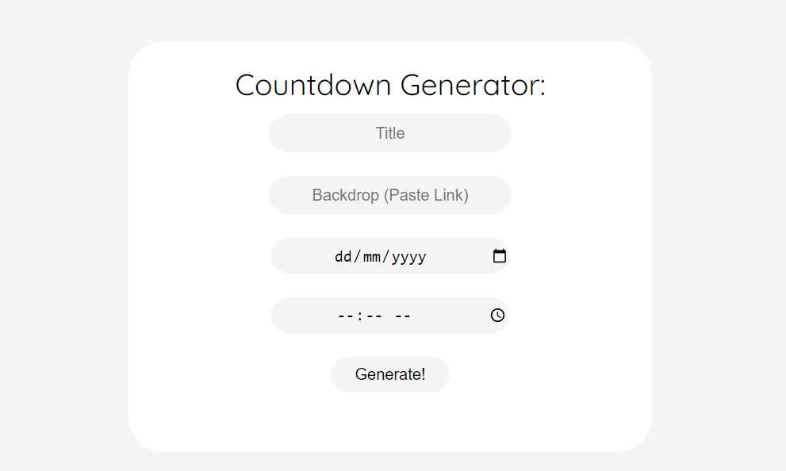
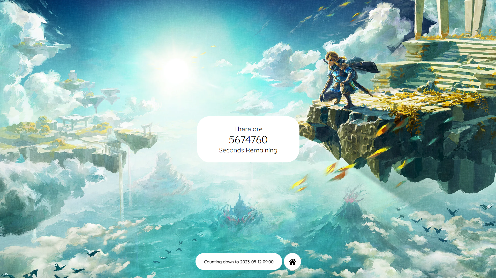
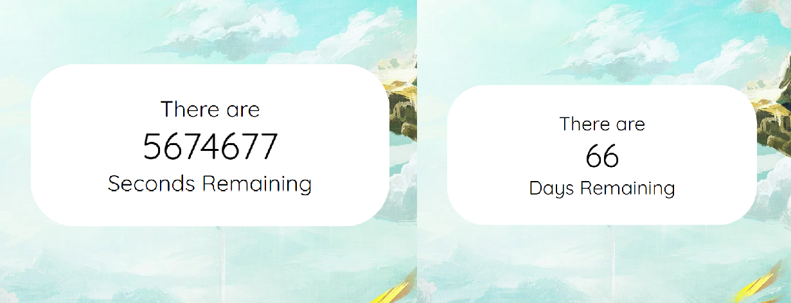

Countdown is a simple website that allows users to generate a custom countdown to any date. It began when I wanted to create a countdown to the release of The Legend of Zelda: Tears of the Kingdom - which initially featured as an in-built countdown on the main page. But as I worked on the project, I decided to expand the scope slightly and implement the ability for users to make their own.
The primary reason I wanted to create my own countdown, rather than use an existing one online, was so I could create a simple, clean interface without external links or other associated clutter. Additionally, I wanted to count down by the second! My design features a straightforward white box, a full-screen image as the background, and some necessary information at the bottom.
The programming behind the task was relatively straightforward, simply utilising timestamps of relevant dates to determine seconds remaining. Later, I added the ability to toggle between seconds and days, the latter of which describes the amount of times midnight passes rather than amount of 24-hour periods, which I feel is more intuitive for users to comprehend.
Instead of 'storing' countdowns, it goes to general page and passes the desired information through URL parameters, meaning copying a link can bring you - or others - back to your countdown any time you wish.
Give my countdown creator a try by clicking here or go to Jaimatthews.com/countdown.